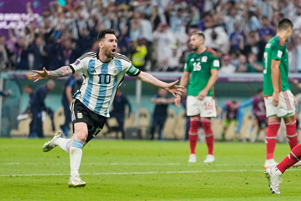
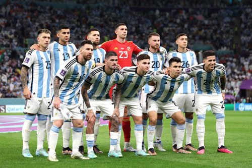
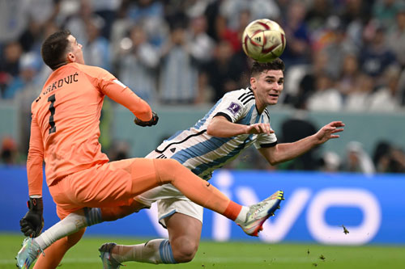

La tercera, de la mano de Leo Messi y Scaloni como entrenador
El primer golpe
Martes 22 de noviembre. La espera se había terminado. La Selección Argentina hacía su debut mundialista en Qatar frente a Arabia Saudita, pero la jornada no fue la soñada. Con un invicto de 36 partidos (tan solo uno menos que el récord histórico de Italia) el conjunto dirigido por Lionel Scaloni parecía tener todo a favor para cerrar una jornada feliz, pero terminó recibiendo un golpe. Un duro golpe a tiempo que logró despertar todos los sentidos de un equipo que nunca se desmoronó.
El encuentro comenzó con el tanto de Lionel Messi de penal a los 10 minutos de partido. Sin embargo, Arabia Saudita dio vuelta el resultado con los goles de Al-Shehri y Al Dawsari, y se quedó con los tres puntos en el primer compromiso por el Grupo C.
Comenzar de nuevo
La revancha llegó muy rápido. Ante México, Messi volvió a abrir el marcador con un remate de media distancia y luego fue Enzo Fernández quien decretó el 2-0 final para traerle a la Albiceleste un manto de tranquilidad y confianza.
La fase de grupos se cerró con la victoria 2-0 frente a Polonia. Pese a que el capitán falló un tiro desde el punto del penal, el equipo pudo sacar el partido adelante y sumó de a tres con las definiciones de Alexis Mac Allister y Julián Álvarez. De esta manera, Argentina se clasificó como líder de su zona.

Fase de eliminatorias: el rival, la sorpresa

El camino de la fase de eliminación directa tuvo como primer desafío a Australia. Otra vez fue Leo Messi quien se encargó de romper el cero, mientras que Álvarez volvió a convertir para estirar la ventaja. Un desvío en Enzo Fernández terminó en el fondo de la red para ponerle suspenso al pase a cuartos, sin embargo, Argentina mantuvo el resultado hasta el final.
La naranja no mecánica
Los cuartos de final presentaron un partido para alquilar balcones. Los goles de Nahuel Molina y de Lionel ponían al seleccionado nacional 2-0 arriba frente a Países Bajos. El encuentro parecía controlado hasta que un doblete de Weghorst cambió todo el panorama y obligó a jugar un alargue por primera vez en la copa. Allí, ninguno de los dos equipos pudo volver a sacarse diferencias, por lo que la clasificación se definió con tiros desde el punto del penal. Fue entonces cuando la figura de Emiliano Martínez se hizo gigante al atajar dos remates de cinco y así la Argentina obtuvo su boleto a la semifinal.
Argentina no es Brasil
Croacia era el rival que se anteponía entre el conjunto de Scaloni y la gran final. Luego de dejar en el camino a Brasil, el seleccionado europeo quería seguir en carrera y disputar su segunda final del mundo de manera consecutiva. Pero un contundente 3-0 (con goles de Messi y dos de Julián Álvarez), puso a la Albiceleste entre las dos mejores selecciones de Qatar 2022.

La mejor final de la historia
La final fue emocionante. Luego de igualar 3-3 en el estadio Lusail, con los goles de Messi en dos oportunidades y otro de Di María, derrotó a Francia en los penales final y se quedó con la copa más deseada por todo el planeta.